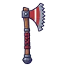
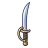

ด้วงแบกเห็ด
มอนธาตุดิน Lv 38–46
เจอที่
| แมพ | โซน | Lv | ภูมิภาค |
|---|---|---|---|
| ป่าเห็ดชั้นใน | 38–46 | ป่ากองไฟ | |
| ป่าเห็ดชั้นใน | วงเห็ดลึก | 44–46 | ป่ากองไฟ |
| หุบสปอร์ม่วง | 38–46 | ป่ากองไฟ | |
| สระรากเห็ดเรืองแสง | 38–46 | ป่ากองไฟ | |
| สระรากเห็ดเรืองแสง | ม่านใยเห็ด | 44–46 | ป่ากองไฟ |
| หอรากมืด (Dark Root) | โพรงเห็ดเรือง | 14–23 |
ค่าสถานะตามเลเวล
| Lv | HP | ATK | DEF | MDEF | EXP | Job |
|---|---|---|---|---|---|---|
| 38 | 6,758 | 72–109 | 23 | 7 | 54 | 41 |
| 42 | 8,935 | 83–124 | 25 | 8 | 59 | 44 |
| 46 | 11,600 | 90–135 | 28 | 8 | 64 | 48 |
ตีด้วยธาตุไหนดี
แรงขึ้น: ไฟ ×1.5 พิษ ×1.25
เบาลง: ลม ×0.5 ดิน ×0.25
วัตถุดิบที่ดรอป
| ของ | โอกาส | |
|---|---|---|
| หมวกเห็ดแดงแข็ง | 55% | 1 ชิ้น (15% ได้ 2) |
อุปกรณ์ที่ดรอป (6)
| ของ | โอกาส |
|---|---|
 ขวานฟันเลื่อย | 0.25% |
 ดาบคู่ทหารม้า | 0.25% |
| ชุดบุรุษไปรษณีย์ป่า (เสื้อ) | 0.15% |
| ชุดบุรุษไปรษณีย์ป่า (กางเกง + รองเท้า) | 0.15% |
| หมวกนักบินหนัง | 0.08% |
| ชุดบุรุษไปรษณีย์ป่า (เข็มกลัดซองจดหมาย) | 0.05% |
สกิล
ร่างแข็ง (Lv 25+) · ร่างแข็ง (Lv 60+) · ทุบพื้น (Lv 60+)